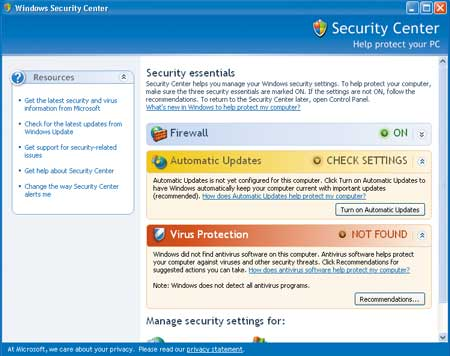

Андрей Колесов
Обеспечение безопасности - один из ключевых пунктов развития современных ИТ, и потому неудивительно, что этим вопросам отводится важное место в стратегии развития поставщиков платформенного ПО, в том числе, разумеется, и корпорации Microsoft (http://www.microsoft.com). Именно этой теме посвятил свой доклад председатель совета директоров и главный софтверный архитектор Microsoft Билл Гейтс, выступая в середине февраля в Сан-Франциско на RSA Conference, крупнейшем мировом форуме по вопросам информационной безопасности. Следуя общей логике этого выступления и дополняя их сведениями из других источников, мы рассмотрим основные результаты деятельности Microsoft в этой сфере в 2004 г. и планы корпорации на ближайшее будущее.
Повышение безопасности клиентских систем
Актуальность проблемы ИТ-безопасности подтверждают уже такие простые сведения: в настоящее время в мире функционирует около 700 млн ПК, и на них работает примерно такое же количество человек. Компьютерам доверяют все больше ответственных, критически важных дел, и потому нарушение их деятельности чревато самыми серьезными последствиями. За последние годы ИТ-поставщики достигли серьезных успехов в деле борьбы с вирусами, хакерскими атаками, спамом и другими враждебными действиями в отношении компьютерных пользователей.
Однако и противная сторона постоянно наращивает свои усилия и повышает изощренность своих технологий. Помимо ряда других факторов, способствующих их активности, эксперты отмечают изменение самой природы этой деятельности - если еще несколько лет назад "вирусописатели" действовали в основном из хулиганских побуждений (нанося вред другим, но без получения выгоды для себя), то теперь за этим стоит растущий коммерческий интерес. Иначе говоря, на смену "любителям", зачастую с неуравновешенной психикой, приходят профессионалы с четко обозначенными деловыми целями.
Учитывая все эти аспекты, Microsoft уделяет особое внимание повышению безопасности своего самого массового продукта - клиентской ОС Windows XP. В начале августа прошлого года корпорация выпустила очередной пакет обновлений Windows XP Service Pack 2 (SP2), нацеленный в первую очередь на повышение уровня защиты этой системы. По данным Microsoft, за шесть месяцев после выпуска данного обновления было распространено более 170 млн его копий.
Принимая во внимание растущий уровень внешних сетевых угроз, в SP2 существенно усилены средства Windows Firewall. Пользователю предлагаются усовершенствованные настройки безопасности по умолчанию, а также новые функции и инструменты, более эффективно защищающие систему и хранящуюся на ПК информацию от хакеров, вирусов и других внешних воздействий.
Вся настройка и управление ресурсами безопасности теперь выполняется через единый интерфейс - Центр обеспечения безопасности Windows (Windows Security Center, интерфейс его показан на рисунке), который отслеживает состояние настроек межсетевого экрана и функции автоматического обновления антивирусного ПО третьих поставщиков. Это позволяет быстро узнать, включены ли важные функции безопасности вовремя или необходимо принять дополнительные меры для повышения степени защиты ПК.
|  |
| Интерфейс Центра обеспечения безопасности Windows.
|
В пакет обновлений вошла давно ожидаемая программно-аппаратная технология защиты от несанкционированного выполнения программного кода, которая снижает риск одного из самых распространенных механизмов проникновения вирусов в систему - с использованием уязвимости, связанной с переполнением буфера (области памяти с данными помечаются специальным образом, их содержимое запрещается интерпретировать как исполняемый код). На протяжении последних лет Microsoft совместно с производителями процессоров, в частности, с AMD и Intel, работала над внедрением технологии Data Execution Prevention в процессоры.
Обновленный вариант Outlook Express позволяет запретить автоматическую загрузку внешнего контента, на который имеются ссылки в получаемых письмах. Он также может гибко управлять режимами открытия всплывающих окон (как правило, с рекламной информацией) при работе с Web-ресурсами через Internet Explorer. Кроме того, SP2 включает обновления для основных драйверов, модернизированную поддержку технологий Wi-Fi и Bluetooth.
Выпустив SP2, Microsoft предоставила и обновленную функцию автоматического обновления (Automatic Update). Как и раньше, с ее помощью пользователи смогут получать последние обновления для Windows XP вместе с инсталляционным ПО, которое поможет установить SP2 и все последующие обновления к ОС, используя свободную пропускную способность Интернета и не влияя на основную работу компьютера. Новшество заключается в возможности фрагментарного скачивания данных: например, один файл можно читать в течение нескольких сеансов связи. Эта новая возможность, наверное, будет особенно полезна для пользователей соединений dial-up.
Выступая на RSA Conference, Билл Гейтс сообщил также о намерении расширять возможности Интернет-служб обновления продуктов Microsoft - Software Update Services и Windows Update. По его данным, число пользователей этих услуг возросло в 2004 г. в пять раз. В начале нынешнего года запущена в опытную эксплуатацию бета-версия нового варианта Microsoft Update - унифицированной службы обновления, ориентированной на индивидуальных пользователей и представителей малого бизнеса, которая будет поддерживать Windows 2000/XP, Windows Server 2003, Office 2003 и Exchange Server 2003. Уже в марте должен начать функционировать ее рабочий вариант.
Аналогичное новое средство для средних и крупных заказчиков - Windows Update Services - станет доступно до конца первой половины текущего года. С его помощью системные администраторы смогут получать обновления более широкого спектра приложений Microsoft и распространять их через свои сети. Одновременно с Windows Update Services будет выпущен Microsoft Baseline Security Analyzer (MBSA) 2.0 - инструмент выявления проблемных с точки зрения безопасности компонентов Windows-инфраструктуры.
На RSA Conference 2005 было также объявлено о том, что нынешним летом появится бета-версия Internet Explorer 7. Эта новость сразу привлекла внимание экспертов, поскольку Web-браузер Microsoft не обновлялся уже почти три года и многие считали, что его новая версия будет представлена только в составе Longhorn. Однако, судя по всему, IE 7 будет доступен раньше. К сожалению, сказав довольно общие слова о повышении уровня безопасности в новом браузере, Билл Гейтс не сообщил ничего конкретного о характеристиках этого приложения. Известно только, что он сможет работать с Windows XP SP2, пользователи более ранних ОС его применять не смогут. Двумя днями позже представители Microsoft уточнили, что в IE 7 будут встроенные средства защиты от вредоносных программ.
Фото.
Билл Гейтс объявляет о будущем выпуске Internet Explorer 7.0, в котором появятся новые возможности обеспечения безопасности, реализованные в Windows XP Service Pack 2.
Защита корпоративных систем
В 2004 г. Microsoft представила новую версию своего ведущего продукта, обеспечивающего безопасность корпоративных сетей, - Internet Security and Acceleration (ISA) Server 2004. В прошлом году была выпущена редакция Standard, а с нынешнего марта будет доступен и вариант Enterprise Edition.
В ISA Server 2004 сделан целый ряд принципиальных архитектурных и функциональных улучшений по сравнению с предыдущим вариантом ISA 2001. По сравнению со стандартным изданием (см. "Microsoft ISA Server 2004 - новое средство защиты", "BYTE/Россия" № 12'2004) в ISA 2004 Enterprise Edition усилена защита доступа к критически важным бизнес-приложениям через Интернет, а также обеспечивается более высокий уровень управляемости, масштабируемости и поддержки доступности.
ISA Server 2004 объединяет в себе усовершенствованный трехуровневый межсетевой экран уровня приложений, средства организации и управления виртуальными частными сетями (VPN) и службу кэширования Web-данных. Корпоративная версия продукта поддерживает удаленный доступ сотрудников к электронной почте и внутренним приложениям, а партнеров - к данным информационной системы предприятия. Обеспечивается защищенная связь распределенных отделений компании с ее головным офисом, улучшена защита от нежелательного Интернет-трафика, а для часто используемого Web-контента повышена скорость доступа.
В ISA Server 2004 Enterprise Edition появился и еще ряд возможностей. Так, централизованное управление позволяет администрировать все сети и отдельные серверы с одного рабочего места. Конфигурационная информация о сервере хранится в базе данных Active Directory Application Mode (ADAM). Системный администратор предприятия имеет возможность гранулированного управления политиками функционирования сервера в рамках всей организации, включая уровни прав, предоставляемые администраторам отдельных сетей.
Используя Cache Array Routing Protocol, пользователь может эффективно распределять кэширование данных по нескольким серверам, что повышает масштабируемость системы и производительность сети. Улучшенная балансировка ресурсов достигается с помощью технологии Network Load Balancing (NLB), интегрированной с ISA Server 2004 Enterprise Edition.
Пользователи могут выстраивать инфраструктуру ISA Server 2004 Enterprise Edition, масштабируя свои системы как за счет увеличения числа узлов сети, так и при помощи симметричных мультипроцессорных (SMP) серверов с числом процессоров восемь и более.
Для заказчиков, использующих Microsoft Operations Manager (MOM) 2005 для управления серверными продуктами Microsoft, предлагается также Microsoft ISA Server Management Pack для MOM 2005. Этот пакет позволяет отслеживать события, происходящие на ISA Server, анализировать характеристики и тренды процессов, давая возможность активно управлять конфигурацией сервера для оптимизации функционирования системы.
Как известно, одно из новшеств в Windows Server 2003 - реализация служб управления правами доступа Rights Management Services (RMS), которая, в частности, служит для повышения уровня и гибкости защиты информации в приложениях Microsoft Office 2003 (см. "Платформа Microsoft Office System 2003", "BYTE/Россия" № 12'2003). В ближайшее время корпорация намерена выпустить пакет Windows RMS Service Pack 1, который позволит партнерам и заказчикам организовывать более эффективное управление правами доступа пользователей, в том числе в интеграции со службой Active Directory.
Борьба с вредоносными программами
Качественно новым явлением в деятельности Microsoft стала заметная активизация в области борьбы с вредоносным ПО. До недавнего времени корпорация занималась в основном "методологической" поддержкой поставщиков средств защиты (в том числе на уровне законодательных инициатив). Но теперь ситуация резко изменилась - Microsoft намерена поставлять на рынок собственные решения для борьбы с вирусами, троянцами, сетевыми червями и т. д.
В первые дни нового года Microsoft представила средство Windows AntiSpyware, предназначенное для защиты ПК от загрузки вредоносного и нежелательного ПО (в том числе шпионских программ и рекламного содержания). Немногим более чем за месяц с Web-сайта корпорации было загружено свыше 6 млн копий этого решения, в основе которого лежат разработки сообщества SpyNet и исследовательских лабораторий Microsoft. Windows AntiSpyware свободно доступен всем зарегистрированным пользователям лицензионной ОС Windows (см. врезку "Борьба с пиратами - но без ущерба для безопасности").
А в начале февраля Microsoft объявила о планируемой покупке компании Sybari Software (http://www.sybari.com), одного из ведущих поставщиков средств обеспечения безопасности (Sybari - частная фирма, поэтому условия сделки не уточняются). В официальном сообщении подчеркивается, что данное приобретение станет ключевой частью общей стратегии Microsoft по защите корпоративных систем от вредоносного ПО.
В настоящее время технологии Sybari Software применяют 10 млн пользователей на более чем 10 тыс. предприятий по всему миру (в их числе 20% компаний из списка Fortune 500) для защиты систем обмена сообщениями и поддержки групповой работы от вирусов и спама. Один из крупнейших клиентов Sybari Software - сама Microsoft: в мае прошлого года корпорация выбрала средства Sybari для защиты своей ИТ-инфраструктуры (напомним, что информационная система Microsoft - одна из крупнейших и наиболее атакуемых в мире).
Конечно, решение Microsoft заняться вплотную вопросами антивирусной защиты трудно назвать неожиданным. Скорее вызывает удивление то, что корпорация до сих пор оставляла этот сегмент ПО для свободной деятельности других поставщиков. Ведь реальный ущерб и потенциальные угрозы со стороны вредоносных программ, особенно в условиях бурного развития Интернета, действительно очень велики. А самое парадоксальное заключается в том, что, несмотря на широкий спектр средств защиты, пользователи уделяют этой проблеме явно недостаточное внимание. В таких условиях против реализации средств защиты на уровне ОС вряд ли стали бы выступать даже самые рьяные борцы против монополизма в ИТ. Но Microsoft, постоянно расширяя сферу своих "творческих" интересов, почему-то до сих пор игнорировала антивирусный сегмент.
Теперь же ситуация складывается совсем иначе. В сообщении Microsoft говорится о намерении заняться созданием защитного ПО для информационных систем предприятий на серверном уровне. Технологии Sybari Software ориентированы как раз на корпоративных клиентов и предлагают, в частности, решения для Microsoft Exchange, Microsoft Office SharePoint Portal Server и Microsoft Windows SharePoint Services. Отличительная особенность средств Sybari Software - объединение нескольких антивирусных "движков" (от других производителей) в едином решении. Однако после завершения процедуры покупки Microsoft намерена включить в его состав и собственный механизм, основанный на технологии GeCAD, приобретенной еще в 2003 г.
Сейчас, конечно, сложно сказать, как последние действия Microsoft скажутся на развитии отрасли антивирусного ПО, но очевидно, что они окажут заметное влияние на общую расстановку сил в этой сфере ИТ-бизнеса. Наверняка можно ожидать, что корпорация получит свою долю данного рынка, и эта доля, скорее всего, будет увеличиваться. С другой стороны, выход поставщика платформенного ПО в специализированный сегмент обычно сопровождается ростом спроса со стороны потребителей и увеличением общего объема поставок продуктов. Так что выиграть от появления нового игрока могут и старожилы антивирусного рынка - если, конечно, скорректируют стратегию развития своего бизнеса с учетом изменившихся конкурентных условий.
Борьба с пиратами - но без ущерба для безопасностиВ начале 2005 г. Microsoft приступила к реализации широкомасштабной программы Windows Genuine Advantage (WGA, "Преимущество подлинности Windows"), направленной на увеличение эффективности борьбы с пиратством. Став участником этой программы, пользователь ПК с помощью специального ПО может проверить на подлинность установленную у него ОС Windows XP и, пройдя такой тест, получить гарантированный доступ к обновлениям ОС, а также к ряду других популярных программ и предложений Microsoft. WGA - это еще одно средство решения задачи защиты авторских прав разработчика. Пилотный этап программы для пользователей англоязычных версий Windows XP был анонсирован в сентябре 2004 г. Немного позднее к ней смогли присоединиться владельцы национальных вариантов ОС в Китае, Норвегии и Чехии (эти три страны характеризуются разными рыночными условиями и уровнем пиратства). С 7 февраля программа заработала для пользователей еще 20 языковых версий Windows XP, в том числе и русской. Суть WGA заключается в следующем. Зайдя на центр свободной загрузки Web-сайта Microsoft (http://www.microsoft.com/downloads), пользователь увидит приглашение к участию в программе. Согласившись на это, он запишет на свой ПК небольшой компонент ActiveX, который проверит подлинность установленной ОС и дополнительно - правильность ее активации, а для OEM-версий - еще и соответствие системы аппаратуре. В случае обнаружения проблем программа будет задавать наводящие вопросы, чтобы установить подлинность ПО. Возможно, пользователю будет дан совет обратиться за разъяснениями к продавцу ПК (одна из распространенных форм пиратства на Западе - продажа ПК с предустановленной ОС, якобы лицензионной, но на самом деле пиратской; у нас она встречается гораздо реже.) На пилотном этапе программы выдачей этих рекомендаций дело и ограничится. А вот по окончании пилотного этапа начнутся санкции - те, кто не прошел проверку на подлинность, будут лишены возможности пользоваться услугами центра загрузки ПО и средств автоматического обновления Windows XP. Единственное, что смогут получать все желающие без каких-либо ограничений, - компоненты обеспечения безопасности. Но в любом случае никаких мер для блокирования работы уже установленной на компьютере пользователя ОС предприниматься не будет. По оценкам Microsoft, к настоящему времени к программе WGA уже подключились почти 7 млн пользователей, и эта цифра будет быстро расти: к ним присоединятся добровольцы из числа пользователей еще двадцати национальных версий. Кроме того, для владельцев норвежской, чешской и китайской (упрощенное письмо) версий Windows участие в пилотной программе станет обязательным. Помимо доступа к центру загрузки, пользователи подлинных версий Windows получат дополнительные компоненты, общая стоимость которых превышает 450 долл., и им будет предоставлен ряд льготных возможностей получения ПО и услуг Microsoft (правда, в основном все это предназначено только для жителей Северной Америки). Кроме того, корпорация Microsoft начнет в Китае, Норвегии и Чехии программу легализации, предназначенную для пользователей, обнаруживших, что они приобрели нелицензионную версию Windows XP. Эти пользователи смогут приобрести подлинную версию ОС по сниженной цене. Все участники программы, чья версия Windows окажется поддельной, будут и в дальнейшем получать советы касательно того, как определить оригинальные копии Windows, добиться от недобросовестных продавцов возвращения денег, заплаченных за поддельный продукт, а также как защитить свои компьютеры. Планируется, что во второй половине 2005 г. посетители центра загрузки Microsoft и сайта Windows Update (http://v5.windowsupdate.microsoft.com/v5consumer) должны будут обязательно участвовать в программе Windows Genuine Advantage, чтобы получать доступ ко всему содержимому сервера. Но все обновления программ, касающиеся безопасности, можно будет скачивать с помощью функции автоматического обновления в Windows без обязательной проверки ОС на подлинность! В целях дальнейшей борьбы с компьютерным пиратством корпорация Microsoft планирует совместно со своими партнерами изменить механизм проверки сертификатов подлинности во время активации, поскольку в настоящее время большое число сертификатов ежегодно воруется у добросовестных изготовителей компьютеров и продается заново. |